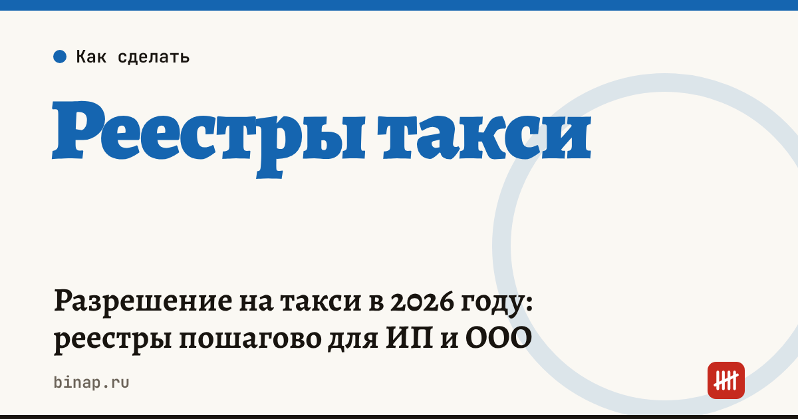

Разрешение на такси в 2026 году: реестры пошагово для ИП и ООО

С 1 сентября 2023 года бумажного «разрешения на такси» больше нет. По закону № 580-ФЗ его заменили записи в региональных реестрах: перевозчик вносится в реестр перевозчиков легковым такси, каждая машина — в реестр легковых такси. Ниже — что нужно сделать ИП или ООО, чтобы законно возить пассажиров, и что изменилось с 1 марта 2026 года.
Коротко
- Перевозчиком может быть ООО, ИП или самозанятый водитель на своей машине.
- Нужны две записи: о перевозчике — в региональном реестре перевозчиков, о машине — в региональном реестре легковых такси. Заявление подают в региональный орган (часто через Госуслуги).
- Перевозчик отвечает за предрейсовый медосмотр водителей и контроль техсостояния машин.
- С 1 марта 2026 года, по закону № 116-ФЗ, в реестр такси вносят только машины, которые соответствуют требованиям локализации; машины, внесённые до этой даты, по общему правилу могут работать дальше.
- Без записи в реестре заказы от агрегатора не придут: службы заказа обязаны проверять перевозчика и машину.
Сроки, изменения и разборы для ИП и самозанятых — каждое утро в Telegram и MAX. Подпишитесь, чтобы не пропустить.
Какие реестры нужны
| Реестр | Кто или что в нём | Кто вносит сведения |
|---|---|---|
| Реестр перевозчиков легковым такси | ООО или ИП, которые оказывают услуги перевозки | Региональный орган по заявлению перевозчика |
| Реестр легковых такси | Каждая машина перевозчика | Региональный орган по заявлению перевозчика |
| Реестр самозанятых водителей легкового такси | Водитель на НПД на своей машине | Региональный орган по заявлению водителя |
| Федеральный реестр служб заказа | Агрегаторы и диспетчерские | Федеральный орган по заявлению службы |
Таксопарк, который сдаёт машины в аренду водителям-самозанятым, должен понять, кто из них перевозчик. Если перевозчик — сам водитель, водитель вносится в реестр самозанятых водителей, а парк — только арендодатель. Если перевозчик — парк, водители работают на него, и вся ответственность за медосмотры и техконтроль на парке. Подробнее о схемах — в статье Водитель такси: самозанятый, сотрудник или аренда.
Пошагово для ИП и ООО
- Зарегистрируйте бизнес с нужным кодом ОКВЭД — 49.32 «Деятельность легкового такси и арендованных легковых автомобилей с водителем». Как выбрать коды — в статье Как выбрать ОКВЭД для ИП.
- Подготовьте машину. Собственность, лизинг или аренда с документами; ОСАГО с целью использования «такси»; цветовая гамма и опознавательный фонарь — по правилам вашего региона.
- Проверьте локализацию, если машину вносят в реестр впервые: модель должна соответствовать требованиям закона № 116-ФЗ. Список подходящих моделей лучше уточнить в региональном органе до покупки.
- Организуйте медосмотр и техконтроль. Договор с медицинской организацией на предрейсовые осмотры и сотрудник или подрядчик для контроля техсостояния — либо свои, либо по договору.
- Подайте заявления о внесении в реестр перевозчиков и реестр такси в региональный орган. Срок рассмотрения и форму заявления смотрите на сайте вашего региона.
- Подключитесь к службе заказа и проверьте, что данные о перевозчике и машинах у агрегатора совпадают с реестром.
Что посчитать до запуска
Запись в реестре — только допуск. Окупается ли машина, зависит от выручки за смену, комиссии агрегатора, топлива, ремонта и платежа по лизингу. Посчитать по своим цифрам можно в калькуляторе окупаемости машины такси, методика — в статье Окупаемость машины в таксопарке: формула. Все материалы для парков — в разделе Таксопаркам.
Частые вопросы
Нужно ли сейчас получать разрешение на такси? Нет. С 1 сентября 2023 года вместо разрешения вносят записи в региональные реестры перевозчиков и машин.
Можно ли внести в реестр машину, купленную в 2026 году? Если её вносят впервые после 1 марта 2026 года, она должна соответствовать требованиям локализации. Подходит ли конкретная модель, уточните в региональном органе.
Самозанятый водитель может работать без таксопарка? Да, если он сам внесён в реестр самозанятых водителей, а его машина — в реестр такси. Тогда медосмотр и техконтроль он организует сам.